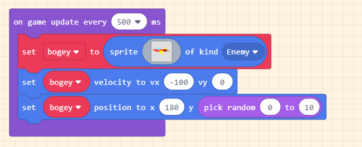
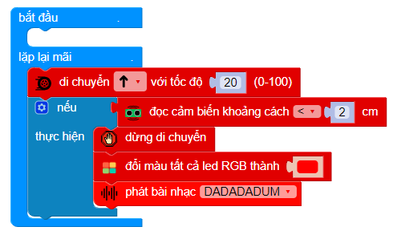
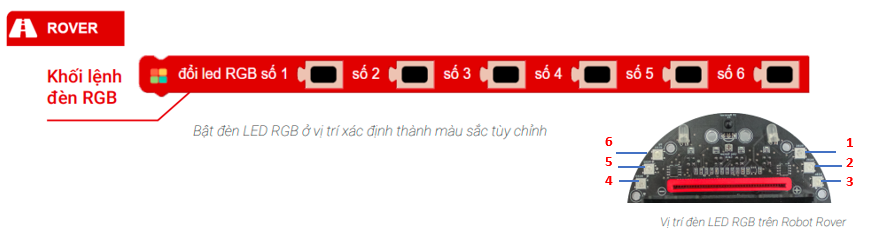
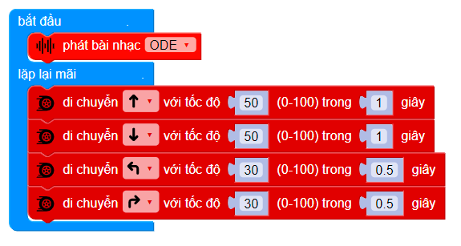
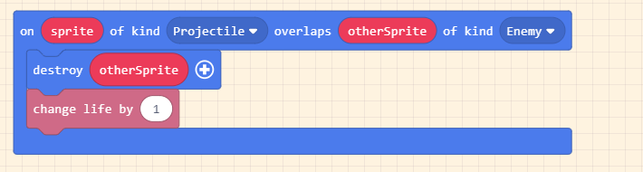
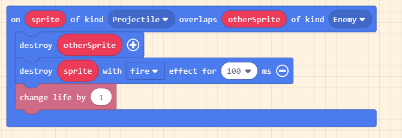
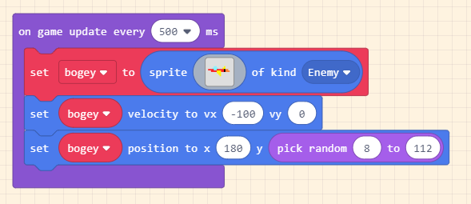
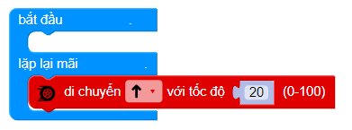

Cửa hàng
Yolo:Bit
xBot
Game Kit - Kit học lập trình game
xBuild Creator Kit
Các module mở rộng
Tài liệu học STEM
Tại các khu vực cần sự yên tĩnh như trường học, bệnh viện, chúng ta sẽ thiết lập một hệ thống đo lường và cảnh báo khi tiếng ồn vượt hạn mức cho phép. Hệ thống sẽ lưu lại số lần vượt mức và hiển thị chúng lên màn hình LCD.
Cảm biến âm thanh (P0)

Màn hình LCD OLED (I2C1)

Kết nối



Với những chương trình dài có nhiều khối lệnh, chúng ta sẽ sử dụng Hàm để rút gọn những chương trình đó.

Hàm giống như việc bạn tạo thêm một loại khối lệnh mới để sử dụng, và khối lệnh này bao gồm các khối lệnh con bên trong
Cách tạo và sử dụng hàm
Chọn mục Nâng cao >> Hàm: sử dụng khối lệnh hàm để làm gì để tạo hàm.
Đưa các khối lệnh vào trong hàm, sau đó đặt tên cho hàm.

Khối lệnh mới với tên vừa đặt sẽ xuất hiện trong mục Hàm.
Tạo một hàm để khởi động lại màn hình.
In ra nội dung “Vi pham: 0”, “Do on toi da: 0” tại dòng 15 và dòng 30 
In ra nội dung “Vi pham: 0”, “Do on toi da: 0” tại dòng 15 và dòng 30
Tạo 2 biến để chứa thông tin về số lần tiếng ồn vượt mức và giá trị tiếng ồn cao nhất, gán dữ liệu số cho 2 biến:
Khởi tạo màn hình LCD và đổi màu tất cả đèn LED thành màu xanh lá, sau đó khởi động lại màn hình LCD
Tạo biến độ ồn và gán giá trị nhận từ cảm biến âm thanh
Nếu tiếng ồn lớn hơn mức 15, ta sẽ hiển thị giá trị tiếng ồn lên màn hình LED của Yolo:Bit dưới dạng biểu đồ phần trăm
Chương trình liên tục kiểm tra và lưu giá trị tiếng ồn cao nhất vào biến
Nếu giá trị tiếng ồn lớn hơn 25:
Đổi tất cả LED thành màu đỏ Cộng thêm 1 vào biến số lần vượt mức Xóa màn hình LCD trước đó và hiển thị số lần vượt mức (dòng 15), giá trị tiếng ồn cao nhất (dòng 30) ra màn hình
Đổi tất cả LED thành màu đỏ
Cộng thêm 1 vào biến số lần vượt mức
Xóa màn hình LCD trước đó và hiển thị số lần vượt mức (dòng 15), giá trị tiếng ồn cao nhất (dòng 30) ra màn hình
Tạm dừng 50ms
Nhấn nút A để đặt lại số liệu, bật đèn LED màu xanh để báo hiệu
Hệ thống cảnh báo tiếng ồn: Tại đây